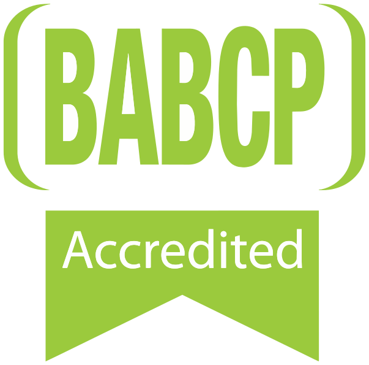

Are you struggling with anxiety, feeling overwhelmed, or finding that past experiences are still affecting you?
Perhaps you're trying to understand your ADHD, struggling with procrastination and emotional regulation, or finding it difficult to switch off from worry.
You don't have to figure it out on your own.

-

BABCP-accredited CBT therapist - EMDR Europe accredited
I'm Kat
A BABCP-accredited Cognitive Behavioural Therapist and Accredited EMDR practitioner, specialising in trauma, anxiety and ADHD.
I provide compassionate, evidence-based online therapy to help you understand what you're experiencing, develop practical strategies and make meaningful changes in your life.
What I can help with
Trauma
Traumatic experiences can continue to impact how you feel, think and respond, even long after the event has happened.
You may experience anxiety, intrusive memories, feeling constantly on edge, difficulties with relationships, low self-esteem or a sense that you're unable to move forward.
As an Accredited EMDR practitioner, I specialise in helping people process traumatic experiences and reduce how much they continue to shape everyday life.
Anxiety
Anxiety can make life feel exhausting.
You might find yourself constantly worrying, overthinking situations, avoiding things that make you uncomfortable, experiencing panic, or feeling unable to switch off.
I use evidence-based approaches including CBT, ACT and EMDR to help you understand the patterns that maintain anxiety and develop more helpful ways of responding.
ADHD
ADHD is about much more than concentration. It can impact organisation, motivation, time management, procrastination, emotional regulation, relationships and self-esteem.
I provide adapted CBT for adults with ADHD, combining practical strategies with a deeper understanding of how ADHD shows up in your everyday life.
Therapy isn't about fixing who you are or trying to make you fit into a way of functioning that doesn't work for you. It's about understanding how your brain works, developing greater self-acceptance and finding strategies and systems that work with you rather than against you.
Why work with me?
Finding the right therapist is important. You should feel understood, comfortable and confident that the person you're working with has the experience to help with what you're going through.
My approach is warm, collaborative and practical. I won't simply tell you what you should do. We'll work together to understand what's happening and find strategies that fit your circumstances, strengths and goals.
- BABCP-accredited CBT therapist Accredited by the British Association for Behavioural & Cognitive Psychotherapies.
- EMDR Europe accredited Specialist training in processing traumatic experience.
- Over 10 years' experience Across NHS Talking Therapies, occupational health and private practice.
- Additional training In ACT and adapted CBT for ADHD.
Therapy through private health insurance
I am an approved therapist for clients accessing therapy through a number of private health insurance providers, including:
-
 AXA Health
AXA Health
-
 Aviva
Aviva
-
 WPA
WPA
If you have private health insurance, your policy may cover psychological therapy. I'll support you through the process of accessing therapy through your insurer and can work with you within the requirements of your policy.
Take the first step
Starting therapy can feel daunting, particularly if you've been struggling for a long time or aren't sure whether therapy is right for you.
You don't need to have everything worked out before getting in touch. If you'd like to find out whether I could help, you can arrange an initial consultation to discuss what you're experiencing and what you're looking for from therapy.